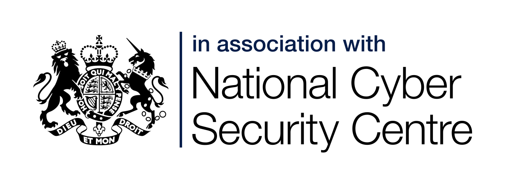

---
# Copyright 2023 seL4 Project a Series of LF Projects, LLC.
# SPDX-License-Identifier: CC-BY-SA-4.0
title: Keynotes for seL4 Summit 2023 announced
anchor: summit-2023-keynotes
---
We are pleased to announce that the two keynotes for the seL4 Summit 2023
will be Gage from NCSC and Sam Leffler from Google! Gage will talk about Scoping assurance activities with seL4
and Sam about CantripOS: An OS for Ambient ML
Applications.

Gage is an Assurance Lead in NCSC with expertise in
cryptography, software assurance and verification. He is part of a larger
team that seeks to provide assurance and articulate risk for a wide range of
products and customers. Whilst he is not a product developer himself, he has
been responsible for presenting assurance cases for products that rely on
seL4 to uphold security requirements.
 Sam Leffler has worked at Google for nearly 15 years. He
was part of the original team that developed ChromeOS and the ChromeBook,
was responsible for the networking components of Project Loon, and worked on
various infrastructure projects before joining Project Sparrow to help build
the CantripOS embedded operating system. Prior to joining Google he was an
independent contractor focused on wireless networking and operating systems.
Before contracting he worked for VMware, Silicon Graphics, Pixar, Lucasfilm,
and the Computer System Research Group (CSR) at UC Berkeley where he was
responsible for the 4.2BSD release of the UNIX operating system. At CSRG he
co-designed and implemented many of the facilities found in contemporary
UNIX systems including sockets, networking support (IP/TCP), reliable
signals, and more.
Sam Leffler has worked at Google for nearly 15 years. He
was part of the original team that developed ChromeOS and the ChromeBook,
was responsible for the networking components of Project Loon, and worked on
various infrastructure projects before joining Project Sparrow to help build
the CantripOS embedded operating system. Prior to joining Google he was an
independent contractor focused on wireless networking and operating systems.
Before contracting he worked for VMware, Silicon Graphics, Pixar, Lucasfilm,
and the Computer System Research Group (CSR) at UC Berkeley where he was
responsible for the 4.2BSD release of the UNIX operating system. At CSRG he
co-designed and implemented many of the facilities found in contemporary
UNIX systems including sockets, networking support (IP/TCP), reliable
signals, and more.